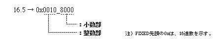
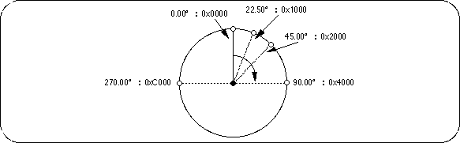
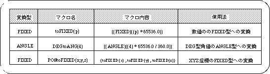
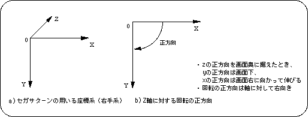

Return to previous page | Return to menu | Go to next page
SGL does not support floating point numbers.
Therefore, the following three variable types based on fixed-point numbers are provided.
Caution
Actually, conversion from floating-point numbers to fixed-point numbers is supported in the form of macro definitions, so there is no need for individual conversion by individual individuals (see “Table 1-1: Macro examples for numeric type conversion”).
1) Fixed-point numbers (used for coordinate positions, trigonometric functions, etc.)
Model name: FIXED
32 bits (signed), upper 16 bits are integer part, lower 16 bits are decimal part
Example) To represent 16.5

2) Angle (used to express all angle values such as rotation angle)
Model name: ANGLE
Express 360 degrees with 16 bits

3) Matrix (used for all matrix variables such as transformation matrix)
Model name: MATRIX
The numerical value is a matrix of 4 rows * 3 columns using FIXED.

The following table lists the numerical conversion macros supported by SGL.
In addition to this, SGL supports several macros according to the purpose.
Macros supported by SGL are defined in header files “sgl.h” and “sl_def.h” (for details, refer to “Structure Reference” in the Reference Manual).

Note) Macros are defined in include files “sgl.h” and “sl_def.h”.
Caution
Even in the sample programs in this document, the macro may be used without notice.
Sega Saturn generally uses a coordinate system called the right-handed coordinate system.
Also, the positive direction of the angle when using the rotation matrix is right rotation with respect to the axis.
